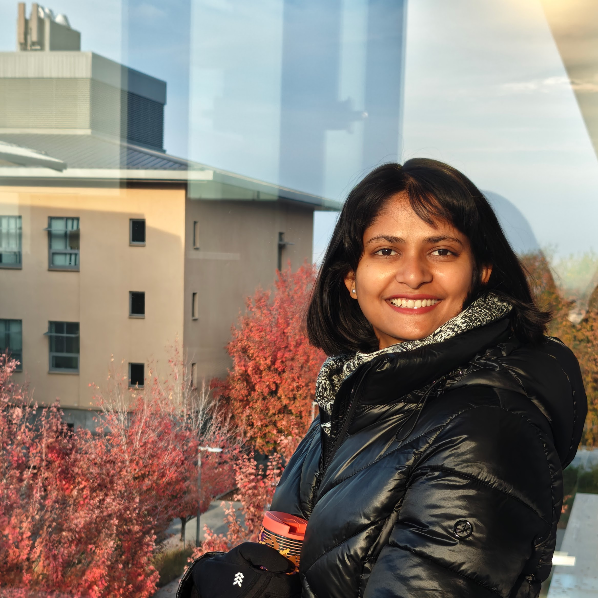

## About Me

I am a Postdoctoral researcher in the Radiological Science Laboratory at Stanford University, California. I recently completed my PhD in Electrical and Computer Engineering at the University of California, Santa Barbara. My research vision is to model healthcare data for precise diagnostics using AI and to integrate domain knowledge to "close the loop" between surgeons, physicians, and scientists. My Ph.D. dissertation focused on developing a principled approach to model the white matter pathways in the human brain to analyze the topology of brain connections. At the Radiological Science Laboratory, I work on both **Design** and **Analysis** components of diffusion MRI (dMRI). The Design aspect involves developing clinically feasible dMRI scans (5–10 minutes) that reliably map white-matter connectivity at sufficient resolution. On the Analysis side, I focus on integrating structural and functional MRI connectivity data with electrophysiological measurements. 
## Latest
I will be presenting my research on "Can tractography predict electrophysiological connectivity?" at the ISMRM Workshop on 40 Years of Diffusion: Past, Present & Future Perspectives.
---
<hr>
